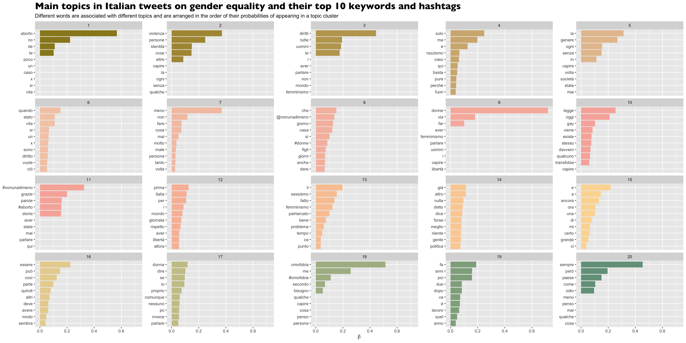

Social Network Analysis using R
▶SNA showing network of influential users tweeting on gender equality during Women's Day.

Agent-Based Modelling using Python and NetLogo
▶ABM simulating xenophobic language diffusion among agents with different national identities, from PhD research.

Topic Modelling using R
▶LDA topic modelling conducted as part of the paper Gender Politics and Transnational Value Contestation.

Social Media Trend Analysis using R and Python
▶The map shows geographical distribution of tweets using gender equality hashtags.
Survey Data Analysis using R
▶OLS regression showing link between social media use and support for judicial independence in Europe. Related to this paper.